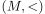
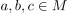
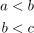
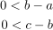
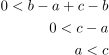

Transitivität der Anordnungsexiome
1. Satz
Die Anordnungsaxiome induzieren eine transitive Relation
2. Beweis
Sei  ein Angeordneter Körper und , so dass gilt

1
Dann folgt nach Definition:

2
und aufgrund der Abgeschlossenheit gegenüber Addition (Axiom) gilt:

3
 4
4